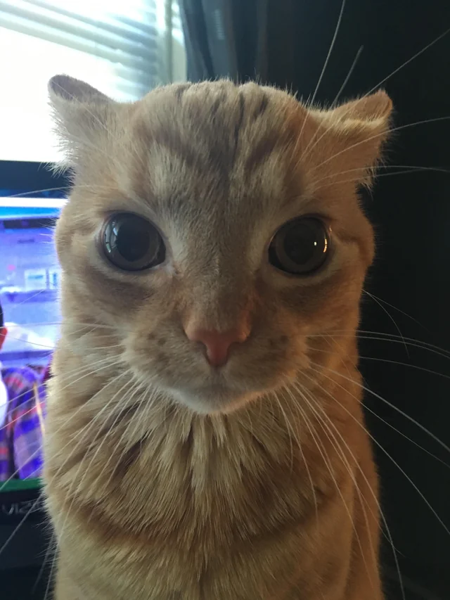

Los gatos domésticos han convivido con los humanos durante miles de años, adaptándose a diferentes entornos como casas y departamentos. Son animales muy limpios y pasan gran parte del día acicalándose y durmiendo.
Una de sus principales características es su personalidad independiente, aunque también pueden generar fuertes lazos con sus dueños. Muchos gatos disfrutan del contacto humano y buscan atención.
Además, tienen habilidades sorprendentes como saltar grandes alturas, moverse silenciosamente y ver en la oscuridad. Estas capacidades los convierten en cazadores naturales.
Gato naranja 1

Gato naranja 2
Gato naranja 3